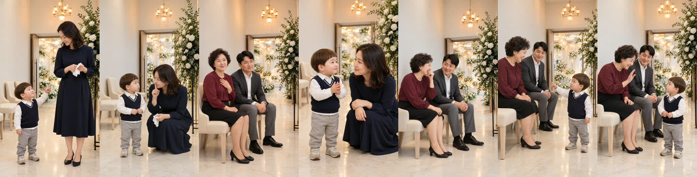
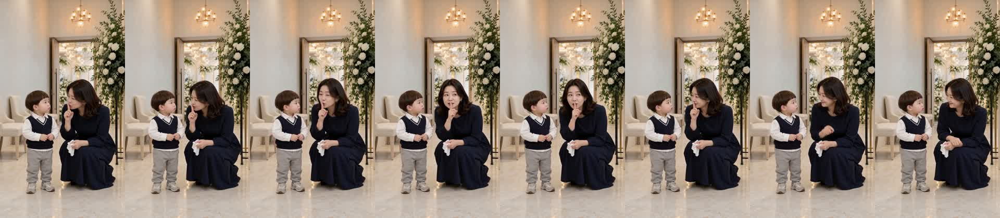
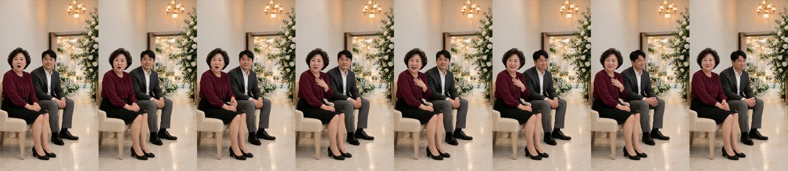
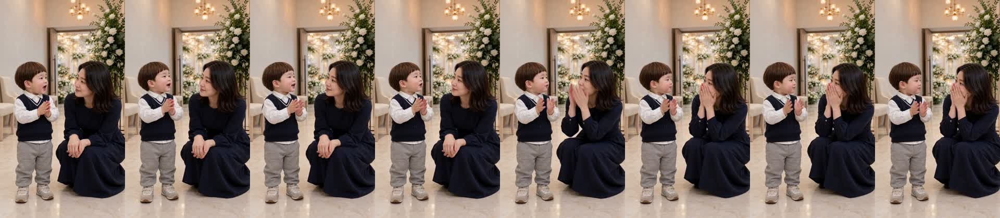
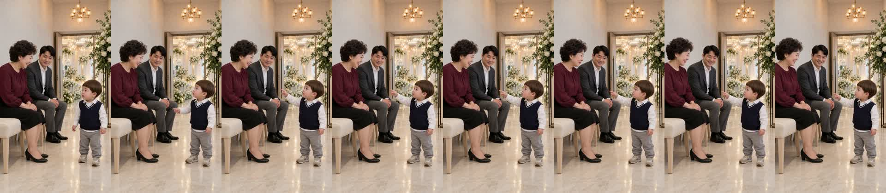
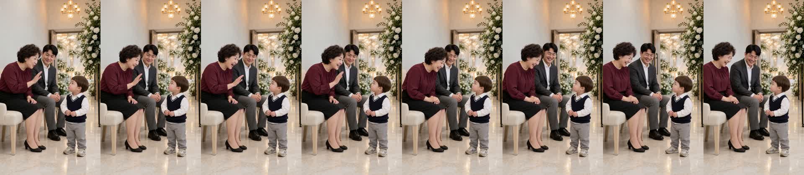

결혼식장 «엄마 응가 했어?» 확인 v2
doyoon-wedding-clap-001 · R13 · 23.8초 · 7컷 · D0~D8 통과 · 2026-10-29
이번에 고친 것
- 2번 컷 도윤이 외모 — 시작 그림을 «인물 시트·1번 컷과 같은 얼굴·바가지 머리·회색 운동화»로 다시 그리고 영상을 다시 뽑았습니다. 배경도 다른 컷과 같은 로비입니다.
- 끝에 도윤이 추가(6·7번 컷) — 웃는 하객 아주머니에게 도윤이가 돌아서서 가리키며 «이모도 응가 했어요?» → 아주머니가 손사래 치며 웃음 «이모는… 아까 했지~», 아빠도 웃음. 처음 보는 어른이라 존댓말로 했습니다(반말이면 점검에서 막힘).
봐 주셔야 할 것
- 도윤이 음높이 — 1번·6번 컷 308Hz로 경고선 330Hz 아래입니다(4번 356Hz). 아기 목소리로 들리는지 들어 주세요.
- 6번 «이모도 응가 했어요?»의 «응가»가 컷 받아쓰기에서 «온가»로 잡혔습니다(완성본 받아쓰기는 «응가»).
썸네일
흰 줄 = 하객 아주머니 대사, 노란 줄 = 도윤 대사. 결말은 숨겼습니다(v1과 같음).

제작 중 다시 뽑은 것
- 2번 컷은 세 번 만에 통과했습니다 — 1차는 화면이 뒤로 빠짐(닮음 0.55), 2차는 H3 가 시작 그림을 버리고 엄마 얼굴 클로즈업으로 새로 찍음(0.22). 명세의 «가까운 거리» 문장이 전신 시작 그림과 어긋나 «머리부터 발끝까지»로 바꿨습니다.
- 6번 컷 1차는 도윤이가 말하고 옆으로 걸어가 «의자 앞 같은 자리에 서 있기»로 다시 뽑았습니다.
- 이번 수정 H3: 2번 3회 + 6번 2회 + 7번 1회 = 6회(이 편 전체 11회).
컷별 실측
| 컷 | 대사 | 받아쓰기 | 음높이 |
|---|---|---|---|
| 1 도윤 | 엄마 응가 했어? | 엄마 응가했어? | 308Hz |
| 2 엄마 | 쉿, 손만 씻었어… | 쉿. 손만 씻었어. | 204Hz |
| 3 하객 아주머니 | 어머, 엄마 다녀왔구나~ | 어머 엄마 다녀왔구나 | 203Hz |
| 4 도윤 | 엄마 잘했어요! | 엄마 잘했어요! | 356Hz |
| 5 하객 아주머니 | 아이고, 칭찬도 해 주네~ | 아이고 칭찬도 해주네 | 194Hz |
| 6 도윤 | 이모도 응가 했어요? | 이모도 온가 했어요? | 308Hz |
| 7 하객 아주머니 | 이모는… 아까 했지~ | 이모는 아까 했지 | 216Hz |
완성본 받아쓰기: «엄마 응가했어? 쉿. 손만 씻었어. 어머, 엄마 다녀왔구나. 엄마 잘했어요. 아이고, 칭찬도 해 주네. 이모도 응가했어요? 이모는 아까 했지.»
인물 시트 · 시작 그림


컷 프레임






